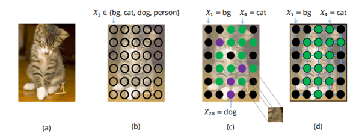
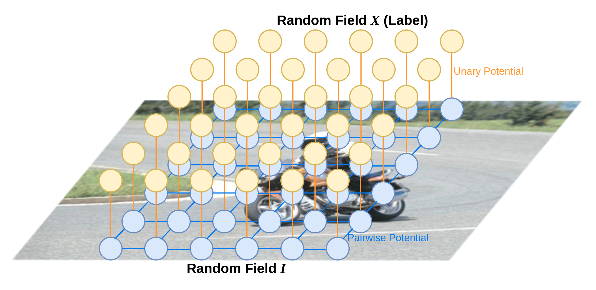
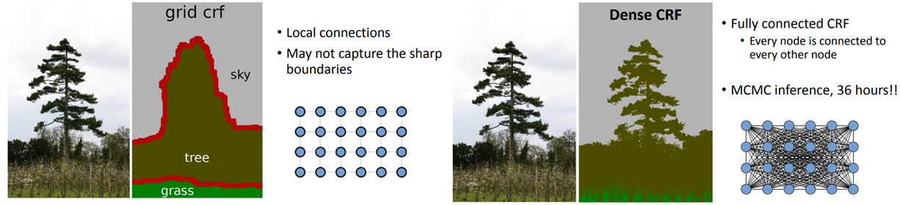
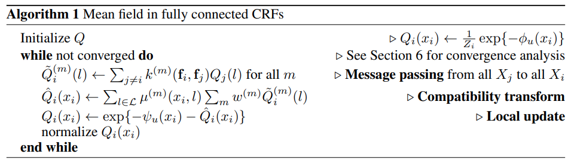
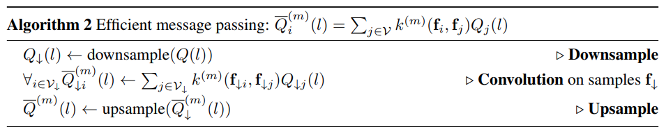

Tutorial: DenseCRF for segmentation task¶
Reference¶
1. Problem Statement¶
Segmentation task는 object 중점의 robust 하고 global한 feature 추출을 목적으로하는 classification / detection task와 다르게 pixel level의 prediction을 수행하야 하므로, detail한 feature 추출이 필요하다.
import torch
model = torch.hub.load('pytorch/vision:v0.10.0', 'fcn_resnet50', pretrained=True)
# or
# model = torch.hub.load('pytorch/vision:v0.10.0', 'fcn_resnet101', pretrained=True)
model.eval()
# Download an example image from the pytorch website
import urllib
url, filename = ("https://github.com/pytorch/hub/raw/master/images/deeplab1.png", "deeplab1.png")
try: urllib.URLopener().retrieve(url, filename)
except: urllib.request.urlretrieve(url, filename)
# sample execution (requires torchvision)
from PIL import Image
from torchvision import transforms
input_image = Image.open(filename)
input_image = input_image.convert("RGB")
preprocess = transforms.Compose([
transforms.ToTensor(),
transforms.Normalize(mean=[0.485, 0.456, 0.406], std=[0.229, 0.224, 0.225]),
])
input_tensor = preprocess(input_image)
input_batch = input_tensor.unsqueeze(0) # create a mini-batch as expected by the model
# move the input and model to GPU for speed if available
if torch.cuda.is_available():
input_batch = input_batch.to('cuda')
model.to('cuda')
with torch.no_grad():
output = model(input_batch)['out'][0]
import numpy as np
VOC_CLASSES = [
"background", "aeroplane", "bicycle", "bird", "boat", "bottle", "bus", "car",
"cat", "chair", "cow", "diningtable", "dog", "horse", "motorbike", "person",
"potted plant", "sheep", "sofa", "train", "tv/monitor",
]
VOC_COLORMAP = np.array([
[128, 0, 0], [0, 128, 0], [128, 128, 0], [0, 0, 128], [128, 0, 128], [0, 128, 128], [128, 128, 128],
[64, 0, 0], [192, 0, 0], [64, 128, 0], [192, 128, 0], [64, 0, 128], [192, 0, 128], [64, 128, 128], [192, 128, 128],
[0, 64, 0], [128, 64, 0], [0, 192, 0], [128, 192, 0], [0, 64, 128], [0, 0, 0],
])
VOC_NUM_CLASSES = 21
import matplotlib.pylab as plt
def draw_voc_segmentation_result(img, pred):
plt.figure(figsize=(20,20))
#img = img.transpose(1, 2, 0)
pred = pred.argmax(0).squeeze(0)
print(pred.shape)
pred = pred.data.cpu().numpy()
bins = np.bincount(pred.flatten())
label_value = np.nonzero(bins)[0]
pred_mask = np.zeros(shape=(pred.shape[0],pred.shape[1] , 3), dtype='uint8')
for n_class in range(VOC_NUM_CLASSES):
pred_mask[np.where(pred>n_class)] = VOC_COLORMAP[n_class,:]
plt.subplot(1,2,1)
plt.title('Input Image', fontsize=16)
plt.axis('off')
ax=plt.gca()
ax.get_xaxis().set_visible(False)
ax.get_xaxis().set_visible(False)
plt.imshow(img)
plt.subplot(1,2,2)
plt.title('Predict', fontsize=16)
plt.axis('off')
ax=plt.gca()
ax.get_xaxis().set_visible(False)
ax.get_xaxis().set_visible(False)
plt.imshow(pred_mask)
plt_handlers = []
plt_titles = []
for idx in label_value:
if idx != 0:
fc = VOC_COLORMAP[idx-1].astype('float')/255
p = plt.Rectangle((0, 0), 1, 1, color=fc)
plt_handlers.append(p)
plt_titles.append('{value}: {name}'.format(value=idx, name=VOC_CLASSES[idx]))
plt.legend(plt_handlers, plt_titles, loc='lower right', framealpha=.5)
input_np = Image.fromarray(np.uint8(input_image))
draw_voc_segmentation_result(input_np, output)
torch.Size([1026, 1282])
FCN, DeepLab과 같이 feature map을 upsample이 포함된 network의 경우 정교한 segmentation 결과를 얻는 것은 한계가 있다. 이를 보완하기 위해 probabilistic graphical models을 이용한 post-processing을 적용할 수 있다.
본 article에서는 segmentation task에서 널리 활용되는 Conditional Random Field를 이용한 post-processing 과정을 다룬다.
2. Conditional Random Field¶
CRF는 Markov random field의 일종으로 sequential labeling 문제에서 Recurrent Neural Network (RNN) 등의 deep learning 계열 알고리즘이 이용되기 이전에 널리 사용되었다.
Sequence data \(x\) 에 가장 적합한 sequence response \(y\)를 찾는 softmax regression(classifier) 의 일종으로, 입력 \(x\)가 주어졌을 때, label \(y\)에 속할 확률(posterior probability)을 최대로 만드는 최적의 output \(y^*\)를 찾는 최적화 문제라 할 수 있다.
\[ y^*=\arg\max_{y}P\left(y\middle| x\right) \]Label의 probability를 Gibbs distribution으로 표현하면,
\[ P(\mathbf{y}|\mathbf{x})=\frac{1}{Z(\mathbf{x})}\exp \left(-\sum_{c \in \mathcal{C}_{\mathcal{G}}} \phi(\mathbf{y}_c|\mathbf{x})\ \right) \]여기서 \(\mathcal{G}\)는 label의 graph, cliques의 집합 \(\mathcal{C}_{\mathcal{G}}\)의 각 clique \(c\)는 potential \(\phi_c\)를 가진다.
Label \(\mathbf{x}\in\mathcal{L}^N\)에 대한 Gibbs energy는 다음과 같이 나타낼 수 있다.
\[ E(\mathbf{y}|\mathbf{x})=\sum_{c \in \mathcal{C}_{\mathcal{G}}}\phi_c(\mathbf{y}_c|\mathbf{x}) \]이를 이용하면 label에 대한 random field를 구하기 위한 확률 \(P(\mathbf{y|\mathbf{x}})\) 최대화 문제를 Energy 최소화 문제로 표현할 수 있다.
3. CRF for Image Segmentation¶

Source: A. Arnab, et al., “Conditional Random Fields Meet Deep Neural Networks for Semantic
Segmentation task의 경우 주어진 image의 각 pixel (observation)과 이에 대응되는 label \(y\)를 다음과 같이 modeling 할 수 있다.
입력 영상(observation): 변수 \(\{I_1,...,I_N\}\)으로 구성된 random field \(I\)
Segmentation map (pixel level label): domain으로 label \(\mathcal{L}=\{l_1, l_2, ..., l_k\}\)을 가지는 변수 \(\{X_1,...,X_N\}\)으로 구성된 random field \(X\)
보편적으로 semantic segmentation의 경우 다음 가정이 유효하므로,
(1) 어떤 pixel이 어떤 label로 판별 되면, 주변에 있는 픽셀 또한 같은 label을 가질 가능이 높음.
(2) 두 pixel이 유사한 값을 가진다면 같은 label을 가질 가능성이 높음
CRF의 Potential function을 다음과 같이 Unary potential과 pairwise potential로 표현한다. (논문과 동일하게 \(\phi(\mathbf{x}|\mathbf{I})\)를 \(\psi(\mathbf{x})\)로 간단히 표현)
\[ E(\mathbf{x})=\sum_{i}\psi_u(x_i)+\sum_{i}\sum_{j\in \partial i}\psi_p(x_i,x_j) \]
(1) Unary potential \(\theta_i\)¶
픽셀 \(i\)에 label이 할당될 확률이며, CNN에 의해 계산된다.
!pip install git+https://github.com/lucasb-eyer/pydensecrf.git
Collecting git+https://github.com/lucasb-eyer/pydensecrf.git
Cloning https://github.com/lucasb-eyer/pydensecrf.git to /tmp/pip-req-build-svl2ve0c
Running command git clone -q https://github.com/lucasb-eyer/pydensecrf.git /tmp/pip-req-build-svl2ve0c
Installing build dependencies ... ?25l?25hdone
Getting requirements to build wheel ... ?25l?25hdone
Preparing wheel metadata ... ?25l?25hdone
Building wheels for collected packages: pydensecrf
Building wheel for pydensecrf (PEP 517) ... ?25l?25hdone
Created wheel for pydensecrf: filename=pydensecrf-1.0rc2-cp37-cp37m-linux_x86_64.whl size=2778815 sha256=3124454c5055ac68d99787ac4f5ddf7d8ae66ad294a7c16d67f8bc4e0857b980
Stored in directory: /tmp/pip-ephem-wheel-cache-b04csu4b/wheels/c1/7e/80/99adc0b2f215180486e24dd9c700028343ba5f566514a0ef05
Successfully built pydensecrf
Installing collected packages: pydensecrf
Successfully installed pydensecrf-1.0rc2
import pydensecrf.densecrf as dcrf
from pydensecrf.utils import compute_unary, create_pairwise_bilateral, \
create_pairwise_gaussian, softmax_to_unary, unary_from_softmax
import skimage.io as io
image = np.asarray(input_image)
dcrf_model = dcrf.DenseCRF(image.shape[0] * image.shape[1], VOC_NUM_CLASSES)
if torch.cuda.is_available():
output_logit = output.to('cpu')
softmax = torch.nn.functional.softmax(output_logit, dim=0).numpy()
unary = unary_from_softmax(softmax)
unary = np.ascontiguousarray(unary)
dcrf_model.setUnaryEnergy(unary)
(2) Pairwise potential \(\theta_{i,j}\)¶
\(k^{(m)}\)은 Gaussian kernel로 \(\mathbf{f}_i, \mathbf{f}_j\)는 pixel \(i\)와 \(j\)에서의 feature vector이며, \(\mu()\)는 \(x_i\neq x_j\) 인 경우 1 , 그 외의 경우 0값을 가지는 label compatibility 함수이다.
영상 속의 object가 일반적으로 연속적인 pixel들로 표현되므로, pixel \(i\)와 \(j\)가 공간적으로 가까이 있거나, 비슷한 모습을 보이는 경우 높아지도록 appearance kernel과 smoothness kernel로 구성된 kernel을 적용한다.
첫 번째 커널(appearance kernel)의 경우 position \(p_i\)와 \(p_j\)에서의 color vector \(I_i\)와 \(I_j\)에 대해 정의되며 공간적으로 유사한 위치에 있고 유사한 intensity를 가지면 큰 값을 가지게 된다.
두 번째 커널(smoothness kernel)의 경우 pixel positions \(p\)에 대해 정의되며, 고립된 작은 영역을 제거하는 효과를 가진다.
하이퍼 파라미터인 \(\sigma_{\alpha}\), \(\sigma_{\beta}\), \(\sigma_{\gamma}\)가 가우시안 커널의 스케일을 조절할 수 있다.
image = np.asarray(input_image)
feats = create_pairwise_gaussian(sdims=(10, 10), shape=image.shape[:2])
dcrf_model.addPairwiseEnergy(feats, compat=3,
kernel=dcrf.DIAG_KERNEL,
normalization=dcrf.NORMALIZE_SYMMETRIC)
feats = create_pairwise_bilateral(sdims=(50, 50), schan=(20, 20, 20),
img=image, chdim=2)
dcrf_model.addPairwiseEnergy(feats, compat=10,
kernel=dcrf.DIAG_KERNEL,
normalization=dcrf.NORMALIZE_SYMMETRIC)
4. Fully Connected CRF for semantic segmentation¶
인접한 화소의 pairwise potential을 이용한 CRF model은 모든 detail 표현하는데 한계가 존재하기 때문에 모든 pixel에 대해 정의한 pairwise potential를 적용하여 성능을 개선한다.
하지만 모든 node(pixel)과 연결되어 있는 pairwise potential을 적용한 CRF model의 propability\(P(\mathbf{X}|\mathbf{I})\)를 추정하기 위해 Markov chain Monte Carlo (MCMC) inference를 적용하는 경우 연산량 문제가 발생한다.

source: http://swoh.web.engr.illinois.edu/courses/IE598/handout/fall2016_slide15.pdf
이를 해결하기 위해 Variational Inference의 아이디어를 활용한 Mean Field Approximation을 적용한다. (https://jaejunyoo.blogspot.com/2017/04/auto-encoding-variational-bayes-vae-2.html)
(1) Mean Field Approximation¶
계산이 복잡한 Posterior distribution \(P(\mathbf{x})\)를 independent한 component로 구성된 marginals distribution \(Q(\mathbf{x})=\prod_iQ_i(X_i)\)으로 근사화한다.
이때 구하고자 하는 posterior와 유사하도록 최소의 KL-divergence \(\mathbf{D}_{\text{KL}}(Q||P)\)를 같는 distribution \(Q\)를 찾는다.
Fully Connected CRFs model에서 KL-divergence를 최소화 하기 위해 다음과 같은 iterative update equation을 적용한다.
각 과정의 연산을 Massage passing, compatibility transform 그리고 local update step으로 구분할 수 있다.

여기서 Message passing 과정의 복잡도는 \(O(N^2)\)으로 나타나므로 이를 근사화하여 연산량을 추가로 감소시킨다.
(2) Efficient Message Passing¶
다음과 같이 표현되는 massage pass step을
feature space에서의 Gaussian kernel \(G^{(m)}_{\Lambda}\)와의 convolution 연산으로 표현할 수 있다.
\[ \widetilde{Q}_i^{(m)}(l)=\sum_{j \neq i} k^{m}(f_i,f_j)Q_j(l')=\left[G^{(m)}_{\Lambda}\otimes Q(l)\right](\mathbf{f_i})-Q_i(l) \]Gaussian Kernel과의 convolution 연산은 low-pass filter와 같은 smooth 효과를 나타낸다.
Sampling 이론에 따르면 간격이 filter의 표준편차에 비례하는 sample 집합을 이용하여 신호를 복원(reconstruct)할 수 있으므로, downsampling된 \(Q(l)\)을 이용 convolution을 수행한 후 다시 upsampling을 통해 신호를 복원할 수 있다.
https://cs.brown.edu/courses/cs129/2012/lectures/bf_course_Brown_Oct2012.pdf
이 근사화를 통해 massage passing 과정의 복잡도를 \(O(N)\)으로 개선할 수 있다. 
#Q = d.inference(5)
Q, tmp1, tmp2 = dcrf_model.startInference()
for i in range(5):
print("KL-divergence at {}: {}".format(i, dcrf_model.klDivergence(Q)))
dcrf_model.stepInference(Q, tmp1, tmp2)
res = np.argmax(Q, axis=0).reshape((image.shape[0], image.shape[1]))
output_tensor = torch.from_numpy(res)
output_tensor = torch.nn.functional.one_hot(output_tensor, num_classes =VOC_NUM_CLASSES).permute(2, 0, 1)
draw_voc_segmentation_result(input_np, output_tensor)
KL-divergence at 0: -15814076.9236994
torch.Size([1026, 1282])
KL-divergence at 1: -16284520.772303186
torch.Size([1026, 1282])
KL-divergence at 2: -16329508.62152704
torch.Size([1026, 1282])
KL-divergence at 3: -16353090.822831595
torch.Size([1026, 1282])
KL-divergence at 4: -16359014.318705484
torch.Size([1026, 1282])